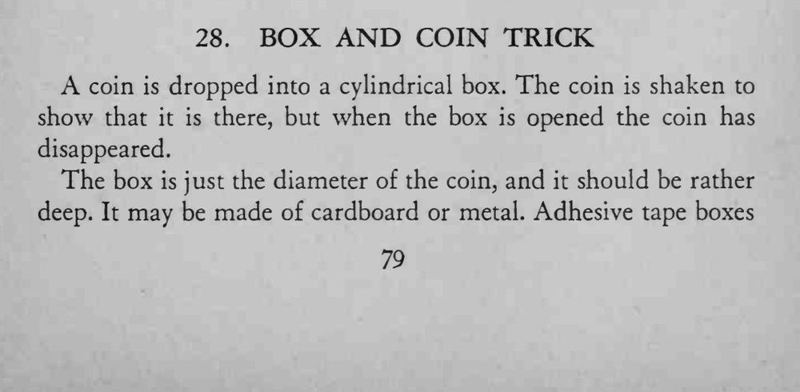
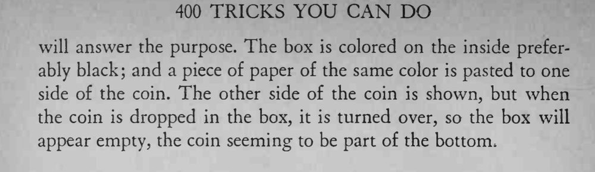

硬币丢进圆筒盒，摇一摇能听见响声；打开盒子，硬币却不见了。
贴纸颜色要与盒内壁完全一致，投币时的翻面动作要藏在盒口的阴影里。


A coin is dropped into a cylindrical box. The coin is shaken to show that it is there, but when the box is opened the coin has disappeared. The box is just the diameter of the coin, and it should be rather deep. It may be made of cardboard or metal. Adhesive tape boxes will answer the purpose. The box is colored on the inside preferably black; and a piece of paper of the same color is pasted to one side of the coin. The other side of the coin is shown, but when the coin is dropped in the box, it is turned over, so the box will appear empty, the coin seeming to be part of the bottom,